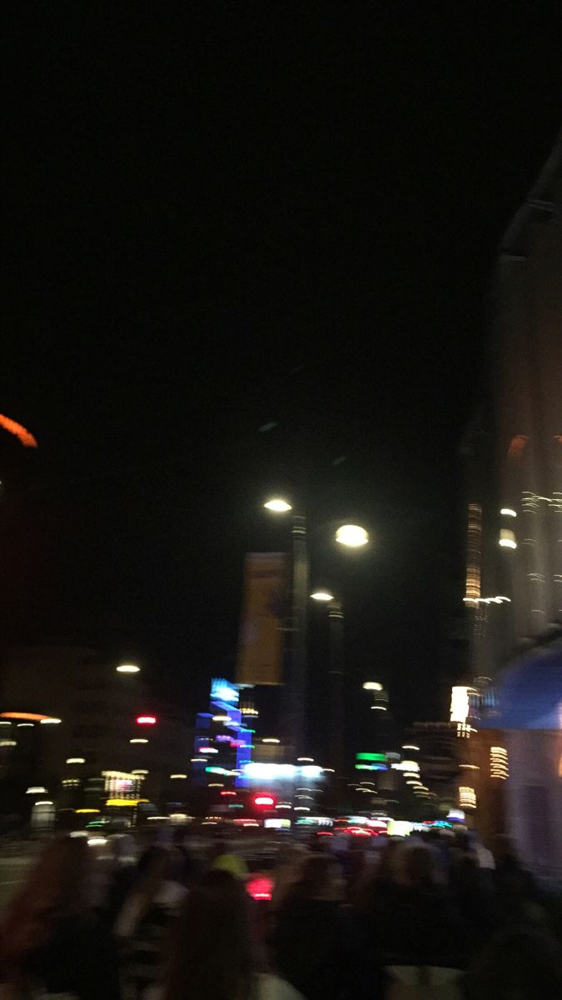

Technology has become an essential part of modern life. People use digital devices and online services for education, communication, entertainment and work.
The development of the internet has made it easier for people around the world to share information. Students can access educational resources and professionals can work with people from different locations.
Modern cities are also becoming more connected through smart technology. Digital systems can help improve transportation, communication and public services.
Social media has changed the way people communicate and share their experiences. While it provides many opportunities, responsible use of technology is equally important.
In the future, technology is expected to continue developing. New innovations may create new opportunities in education, business, science and many other fields.
Learning new digital skills can help people adapt to these changes. Technology can be especially useful when it is used creatively and responsibly.